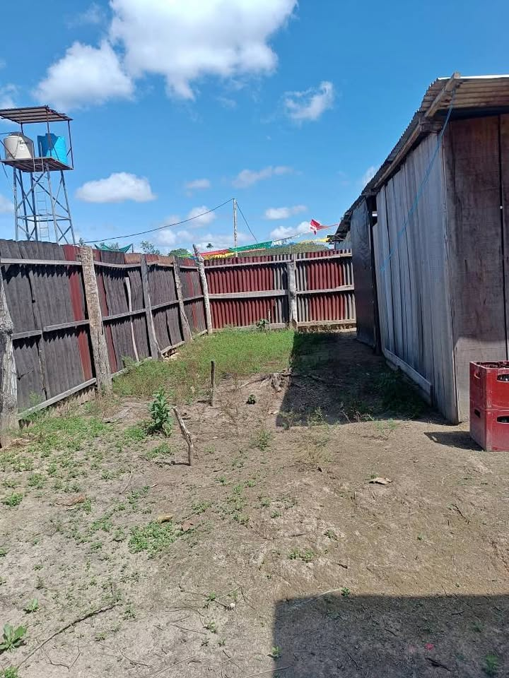

PEN14,000 2,325 m²

🔥🌳 ¡REMATE DE TERRENO EN VENTA – KM 12 FEDERICO BASADRE! 🏡 📍 Ubicación: Km 12 de la Carretera Federico Basadre, 4 cuadras hacia adentro, AA.HH. Renacer. 📐 Medidas: 9.3 m x 25 m 📏 Área: 232.5 m² Tiene construido una ramada 📌 IMPORTANTE: El terreno actualmente no cuenta con título de propiedad ni documentos de propiedad inscritos. Es un terreno en posesión dentro de un asentamiento humano. 📝 Requisito para el comprador: realizar su inscripción/empadronamiento en el padrón de moradores del AA.HH. Renacer, según corresponda. 📲 Informes al número [hidden information] y consultas por WhatsA